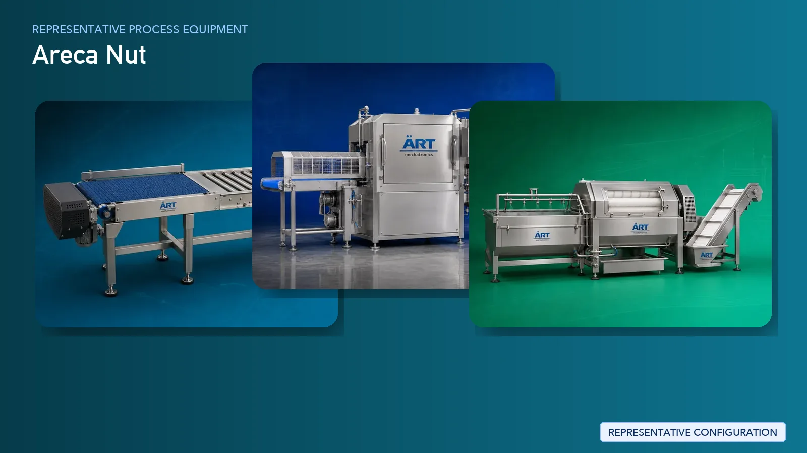

Areca Nut (Betelnut / Supari) Processing Plant & Machinery Solutions
Areca nut processing, also known as betelnut or supari processing, is a specialized agro-processing segment that involves converting raw green areca nut fruit into dried and processed supari products.

About Areca Nut processing
ART Mechatronics provides complete turnkey solutions for areca nut processing plants, offering advanced systems for dehusking, boiling, drying, cutting, grading, and packaging. Our solutions are engineered for high efficiency, uniform drying, and consistent product quality, making them ideal for large-scale industrial operations.
Complete Areca Nut Process Flow
Fresh green areca nuts are received and fed into the processing system.
Ensures smooth and continuous processing.
Outer green husk is removed to obtain raw areca nut.
Ensures:
- Efficient husk removal
- Minimal damage to nut
Dehusked nuts are cleaned to remove impurities.
Improves product quality before processing.
Areca nuts are boiled to soften the structure and develop required characteristics.
Ensures:
- Proper curing
- Uniform color development
- Improved processing quality
Boiled nuts are dried to reduce moisture and achieve required hardness.
Ensures:
- Controlled moisture reduction
- Uniform drying
- Crack-free product
Dried areca nuts are cut into required sizes.
Produces:
- Small supari pieces
- Flakes or chips
Cut pieces are graded based on size and quality.
Ensures uniform product output.
Product may be polished for improved appearance.
Fine dust generated during cutting is controlled. Systems Used:
Ensures:
- Clean working environment
- Product recovery
Final product is packed into pouches or bulk bags.
Suitable for commercial and export packaging.
Machinery Required for Areca Nut Processing Plant
- Material Handling Systems
- Areca Nut Dehusker
- Washing System
- Boiling Tank / Steam Cooker
- Areca Nut Dryer (Hot Air System)
- Betelnut Cutting Machine
- Grading Machine
- Polishing Machine (Optional)
- Dust Collection System
- Packaging Machines
Turnkey Areca Nut Plant Solutions
ART Mechatronics offers complete turnkey solutions for areca nut processing plants, including:
- Process design & plant layout
- Dehusking and boiling systems
- Advanced drying systems (core expertise)
- Cutting and grading systems
- Dust control & air handling systems
- Automation & control panels
- Installation & commissioning
- After-sales support
We customize solutions based on:
- Raw material type (green / red areca nut)
- Production capacity
- Final product format (whole, cut, flakes)
- Drying requirements
Why Choose Art Mechatronics
- Strong expertise in areca nut and supari processing systems
- Advanced drying technology (key differentiator)
- High-efficiency cutting machines
- Reliable thermal and air handling systems
- Heavy-duty industrial machinery design
- Proven performance in pan masala industry
Machinery in a Areca Nut plant
Where it's used
Get pricing & specs for the Areca Nut plant
Share the product, target capacity, current process and plant location. These details help our engineers discuss the right machine or line configuration.
One partner, from design to start-up
ART Mechatronics designs, manufactures, installs and commissions your Areca Nut solution with regional presence in India, UAE and Thailand.